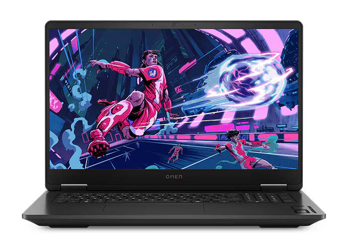

OMEN Hub, minus Windows.
OpenOMEN is an unofficial, community-maintained command-line tool for HP OMEN and Victus laptops on Linux. Set fan modes and power profiles, and watch CPU and GPU stats, from your terminal.
- Latest release
- v0.5.3, 26 Nov 2026
- Works on
- 8 OMEN and Victus models
- Tested on
- Arch, NixOS, Ubuntu, CachyOS
- Written in
- Python
- License
- GPL-3.0
Fans, power profiles and stats, from one command.
Fan control
Run the fans at maximum RPM, hand them back to the BIOS, or flip between the two.
openomen fan max | auto | toggle | status
Power profiles
Gaming, balanced and quiet each set the power profile and the fan mode together. You can also set a single ACPI profile.
openomen power apply gaming | balanced | quiet
openomen power list | set <profile>
Live stats
CPU temperature, per-core usage and frequency, GPU details, fan RPM and the active power profile. Add -w to refresh every 1.5 seconds.
openomen stats -w
openomen cpu | gpu
Doctor
Checks hardware compatibility and driver status, so you know what works on your laptop before you change anything.
openomen doctor
Updates
The binary updates itself in place.
openomen update
Install it in three steps.
One binary, no package manager needed. The wiki has the full steps for each distro.
-
1
Download the binaryGet openomen from the latest release.
-
2
Put it on your PATH
sudo mv openomen /usr/local/bin/ sudo chmod +x /usr/local/bin/openomen
-
3
Check it works
openomen --version
Laptops confirmed working.
Other OMEN and Victus models may work too, since many share similar controllers, but that isn't guaranteed. Run openomen doctor to check yours.

| Model | Variant | Status | Since |
|---|---|---|---|
| Victus 17 | 17z-db100 | Confirmed | v0.1 |
| Victus 16 | 16-ap0xxx | Confirmed | v0.1 |
| Victus 16 | 16-r0xxx | Confirmed | v0.1 |
| Victus 15 | 15-fb0xxx | Confirmed | v0.1 |
| OMEN X 2S | Confirmed | v0.1 | |
| OMEN 15 | Confirmed | v0.4 | |
| OMEN 16 | Confirmed | v0.1 | |
| OMEN 17 | Confirmed | v0.1 |
See what changed in this version and download the binary on GitHub.
Up next
- Manual fan curves
- A graphical interface on top of the CLI
- HP-WMI embedded controller support
Own one of these laptops? Tell us how it goes.
Report what works on your model, ask questions or send a fix. For bigger changes, open an issue first.